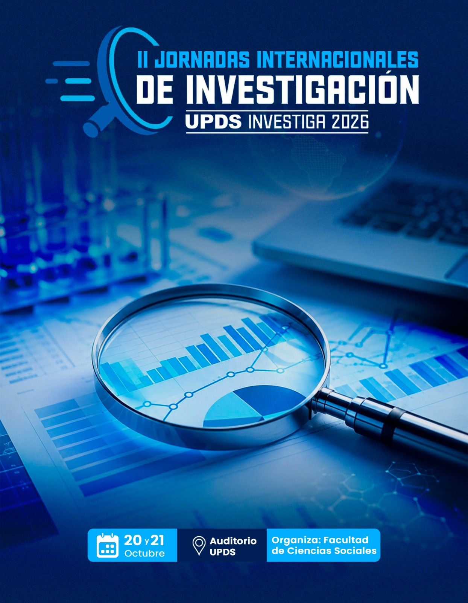

Notas

UPDS Investiga 2026 reunirá a 54 ponentes de siete países en una agenda internacional de investigación
Las jornadas internacionales se desarrollarán el 20 y 21 de octubre y abordarán investigaciones de cinco áreas del conocimiento, con participación de académicos de Bolivia y otros seis países.
La Universidad Privada Domingo Savio (UPDS) se prepara para vivir las Jornadas Internacionales de Investigación “UPDS Investiga 2026”, que se desarrollarán el 20 y 21 de octubre con la participación de 54 ponentes de Bolivia, Ecuador, Paraguay, Chile, Perú, España y Argentina. El encuentro reunirá investigaciones en cinco áreas: Ciencias Empresariales, Ciencias de la Salud, Ingeniería y Tecnología, Ciencias Sociales y Ciencias Jurídicas, mediante ponencias orales y sesiones de póster. Un espacio para compartir conocimiento, generar diálogo académico y fortalecer la investigación desde una mirada nacional e internacional.
UPDS Investiga 2026 reunirá investigaciones de siete países en diversas áreas del conocimiento
Seis de los 54 ponentes que participarán en las jornadas internacionales presentarán estudios sobre competencias empresariales, economía, neuroinflamación, bienestar y atención clínica inclusiva, con representación de Bolivia, Paraguay, Perú y Chile.
Bolivia y otros seis países se reunirán en las Jornadas Internacionales de Investigación de la UPDS, los días 20 y 21 de octubre, con la participación de 54 ponentes y trabajos en cinco áreas: Ciencias Empresariales, Ciencias de la Salud, Ingeniería y Tecnología, Ciencias Sociales y Ciencias Jurídicas. La participación boliviana destacará investigaciones sobre competencias empresariales, bienestar y autocuidado de personas con VIH, y comunicación clínica inclusiva para personas con discapacidad auditiva y visual. Un espacio para compartir resultados, intercambiar perspectivas y fortalecer la investigación científica desde una mirada multidisciplinaria e internacional.